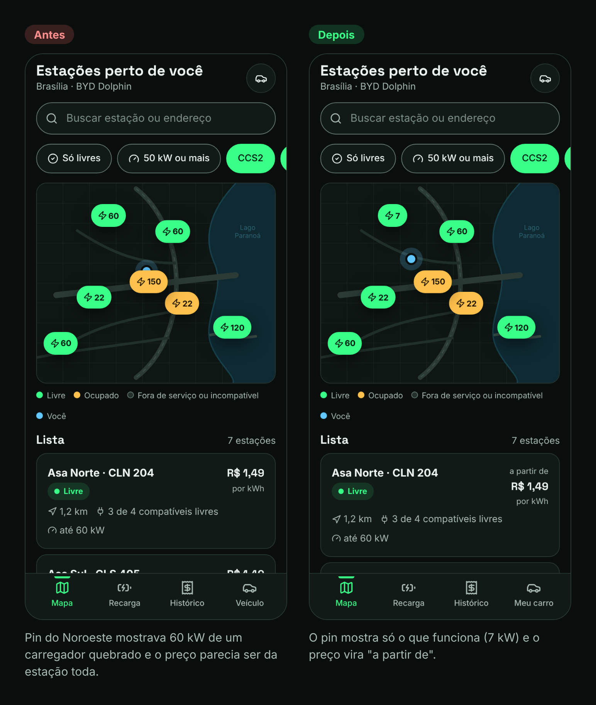
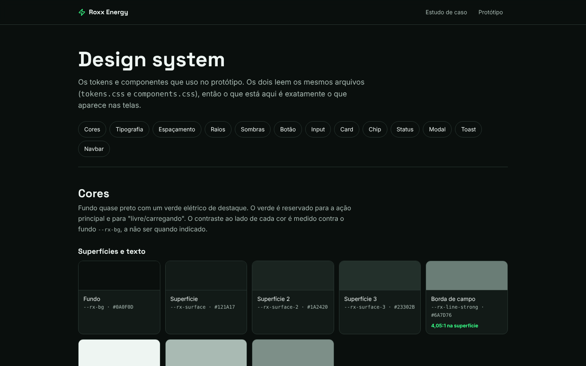

Roxx Energy
Um app para quem tem carro elétrico achar um carregador livre, funcionando e compatível, reservar a vaga e pagar a recarga no mesmo lugar.

Contexto
O carro elétrico cresce no Brasil, mas quem depende de carregador público ainda vive no escuro. A pessoa abre um ou dois apps, confia num status que pode ter dias, dirige até o ponto e só lá descobre se dá para carregar.
Desenhei o Roxx Energy, um app que junta as partes que hoje estão espalhadas: achar, garantir a vaga, carregar e pagar.
Quem tem carro elétrico sai de casa sem saber se o carregador vai estar livre, funcionando e compatível.O problema, em uma frase
Processo
Comecei por um benchmark de cinco produtos reais (PlugShare, Tupi, Zletric, EZVolt e Shell Recharge). Cada um resolve um pedaço; nenhum resolve a confiança no status.
Status sem data
Um "funcionando" de três dias atrás não diz nada. Todo status passou a mostrar há quantos minutos foi atualizado.
Filtro que ninguém liga
Checar o plugue existe, mas depende do usuário. O carro é cadastrado no início e o filtro já vem ligado.
Reserva só para AC
Justo a carga rápida, mais disputada, ficava de fora. Aqui a reserva vale para AC e DC, com 15 minutos de tolerância.
Com isso montei uma proto-persona, assumida como hipótese, e a jornada atual com as dores de cada etapa. Os fluxos vieram depois, junto com a priorização do que entra na primeira versão.

Com o protótipo pronto, fiz uma avaliação heurística com as 10 heurísticas de Nielsen. Encontrei 8 problemas e corrigi 6. O mais grave: um pin anunciava 60 kW num carregador quebrado.

Solução
O mapa já abre filtrado pelo carro. Cada estação mostra quantos conectores compatíveis estão livres e há quanto tempo isso foi atualizado. Motoristas podem relatar problemas, e o relato aparece para quem vem depois.


Handoff
Para o produto sair do papel, o desenvolvimento precisa de mais do que telas bonitas. Entreguei:
- Design system com cores, tipografia, espaçamento e 8 componentes em todos os estados (padrão, hover, foco, desabilitado, erro), com quando usar e o que evitar.
- Protótipo navegável com os fluxos de erro, não só o caminho feliz.
- Contraste conferido para cada par de cores (WCAG AA) e regras de acessibilidade escritas.
- Documentação com fluxos, priorização do MVP e roteiro de teste.

Resultado
- 11
- telas no protótipo
- 8
- componentes documentados
- 8
- problemas achados na heurística
- 6
- corrigidos antes de mostrar
O próximo passo é rodar o teste de usabilidade com cinco motoristas, que já tem roteiro, tarefas e métricas. Até lá, a proto-persona continua marcada como hipótese.
Aprendizados
- Usar o fluxo pega o que a tela parada esconde. Os dois problemas mais graves só apareceram percorrendo o protótipo como um motorista.
- O maior risco não é a interface, é o dado. Um status errado derruba a confiança no app inteiro, por isso a hora da atualização e os relatos.
- Restringir a cor de destaque deu clareza. O verde só aparece em três lugares: ação principal, livre e progresso.
Entregas
Agendamento para salão, barbearia e estética: o cliente marca sozinho, sem criar conta, e o dono organiza a agenda e acompanha o mês.